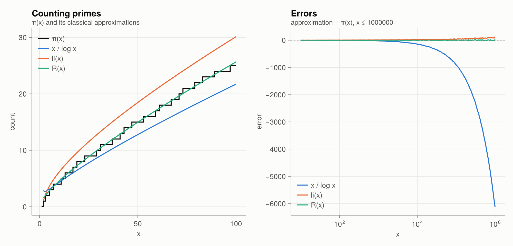

1 · Primes
Counting primes
The prime-counting function $\pi(x) = \#\{p \le x\}$ is the object of the whole story.
sieve(50)15-element Vector{Int64}:
2
3
5
7
11
13
17
19
23
29
31
37
41
43
47[primepi(10^k) for k in 1:7]7-element Vector{Int64}:
4
25
168
1229
9592
78498
664579Near $x$, roughly one integer in $\log x$ is prime. Gauss (around 1792) turned this observation into the guess
\[\pi(x) \approx \operatorname{li}(x) = \int_0^x \frac{dt}{\log t},\]
and the Prime Number Theorem (Hadamard and de la Vallée Poussin, 1896) states that $\pi(x) \sim x / \log x$. Riemann proposed the better approximation
\[R(x) = \sum_{n\ge1} \frac{\mu(n)}{n}\, \operatorname{li}\!\left(x^{1/n}\right) = 1 + \sum_{k\ge1} \frac{(\log x)^k}{k \cdot k!\, \zeta(k+1)} ,\]
which riemann_R evaluates with the rapidly convergent Gram series on the right.
x = 10^6
(π = primepi(x), x_over_log = x / log(x), li = li(x), R = riemann_R(x))(π = 78498, x_over_log = 72382.41365054197, li = 78627.54915946226, R = 78527.39942912769)plot_prime_counting()
The right panel is the real subject of RH: the error $\operatorname{li}(x) - \pi(x)$. It is tiny compared with $x/\log x - \pi(x)$. RH is equivalent to (von Koch, 1901)
\[\pi(x) = \operatorname{li}(x) + O\!\left(\sqrt{x}\,\log x\right).\]
Prime gaps
ps, gs = prime_gaps(10^6)
maximum(gs), ps[argmax(gs)](114, 492113)The average gap near $p$ is $\log p$. Cramér's random model predicts that the largest gaps are about $\log^2 p$.
plot_prime_gaps()
Arithmetic functions that encode primes
Several arithmetic functions have Dirichlet series that are simple expressions in $\zeta$:
| function | definition | Dirichlet series |
|---|---|---|
| Möbius $\mu(n)$ | $(-1)^k$ if $n$ is a product of $k$ distinct primes, else 0 | $1/\zeta(s)$ |
| Liouville $\lambda(n)$ | $(-1)^{\Omega(n)}$ | $\zeta(2s)/\zeta(s)$ |
| von Mangoldt $\Lambda(n)$ | $\log p$ if $n = p^k$, else 0 | $-\zeta'(s)/\zeta(s)$ |
| Euler $\varphi(n)$ | $\#\{k \le n : \gcd(k,n) = 1\}$ | $\zeta(s-1)/\zeta(s)$ |
| $\sigma_k(n)$ | $\sum_{d \mid n} d^k$ | $\zeta(s)\zeta(s-k)$ |
[mobius(n) for n in 1:12]12-element Vector{Int64}:
1
-1
-1
0
-1
1
-1
0
0
1
-1
0vonmangoldt(8), vonmangoldt(12), totient(36), divisor_sigma(12)(0.6931471805599453, 0.0, 12, 28)Chebyshev's functions
The weighted counts
\[\vartheta(x) = \sum_{p \le x} \log p, \qquad \psi(x) = \sum_{n\le x} \Lambda(n) = \sum_{p^k \le x} \log p\]
are more natural than $\pi(x)$. The PNT is equivalent to $\psi(x) \sim x$, and $\psi$ is what the explicit formula of Chapter 6 describes exactly.
chebyshev_psi(10), log(lcm(1:10)) # ψ(n) = log lcm(1,…,n)(7.832014180505469, 7.832014180505469)plot_chebyshev()
The Mertens function
\[M(x) = \sum_{n \le x} \mu(n).\]
It behaves like a random walk. RH is equivalent to $M(x) = O(x^{1/2+\varepsilon})$ for every $\varepsilon > 0$. The stronger Mertens conjecture $|M(x)| < \sqrt{x}$ is false (Odlyzko–te Riele 1985), although no counterexample is known explicitly.
mertens(10^5), mertens_ratio_max(10^6)(-48, (x = 5, ratio = 0.8944271909999159))plot_mertens()
Functions in this chapter
sieve, isprime, primepi, primepi_table, nthprime, factorize, prime_gaps, twin_primes, li, Li, riemann_R, mobius, mobius_table, liouville, mertens, mertens_table, vonmangoldt, chebyshev_theta, chebyshev_psi, totient, divisor_sigma, sigma_table.